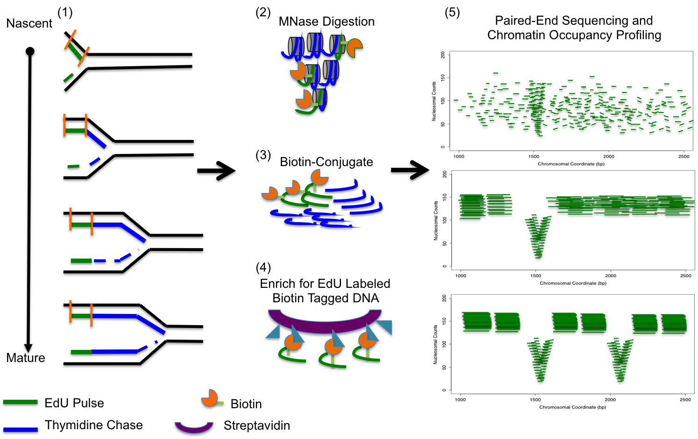
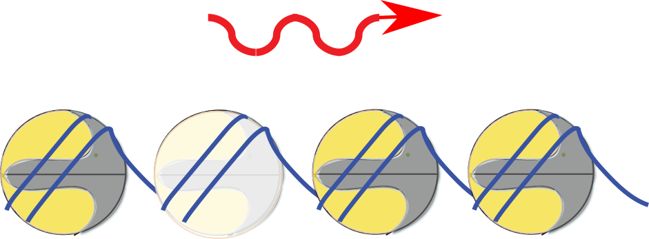
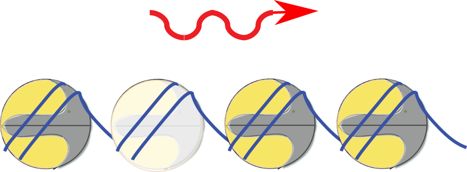
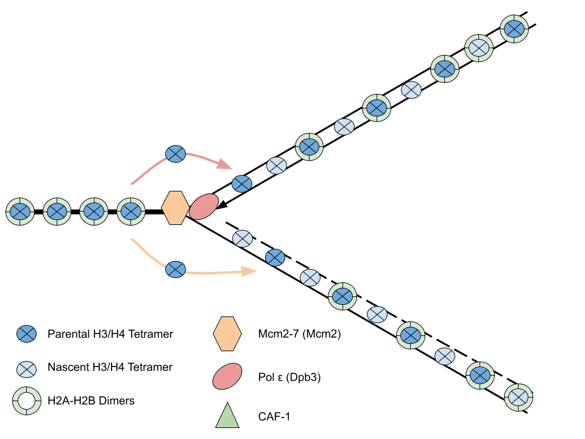
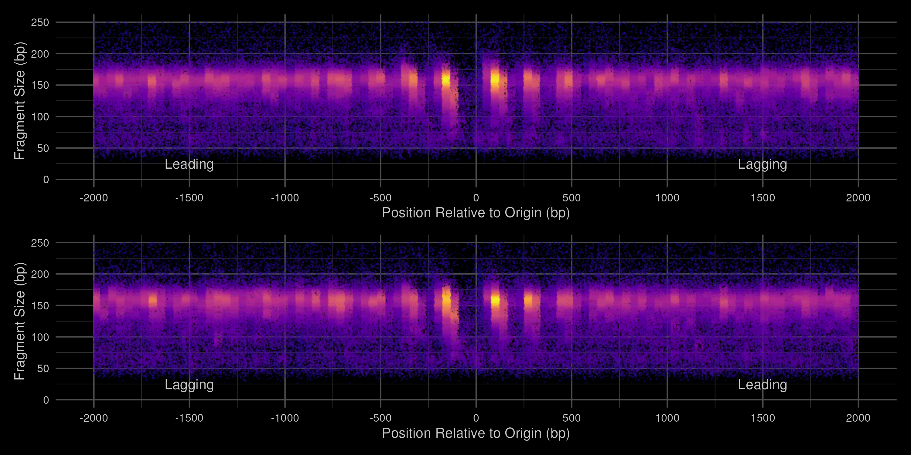
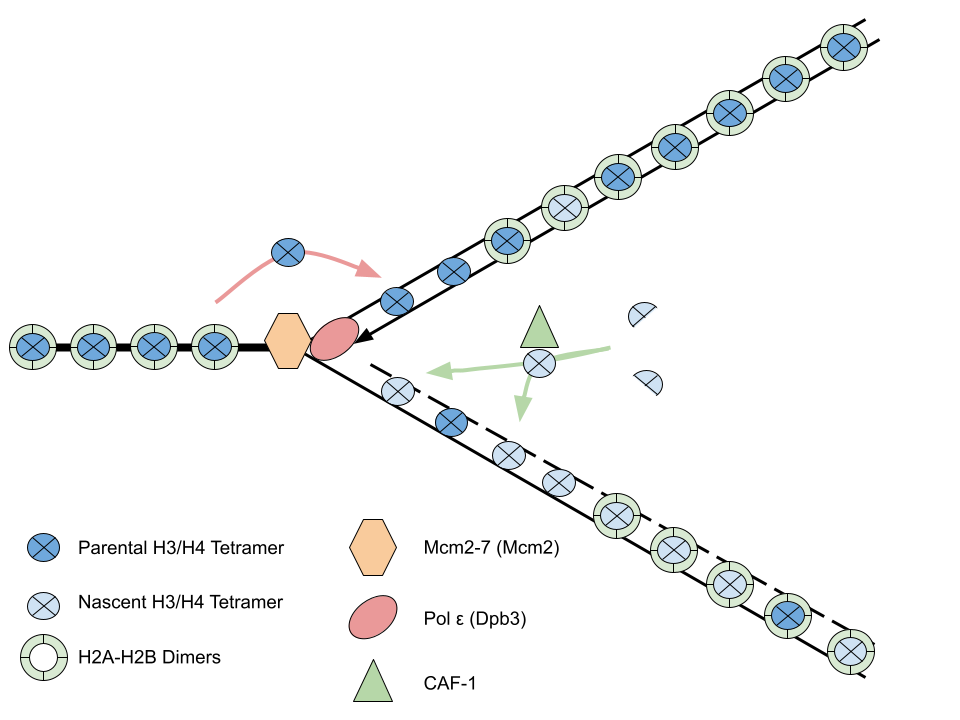
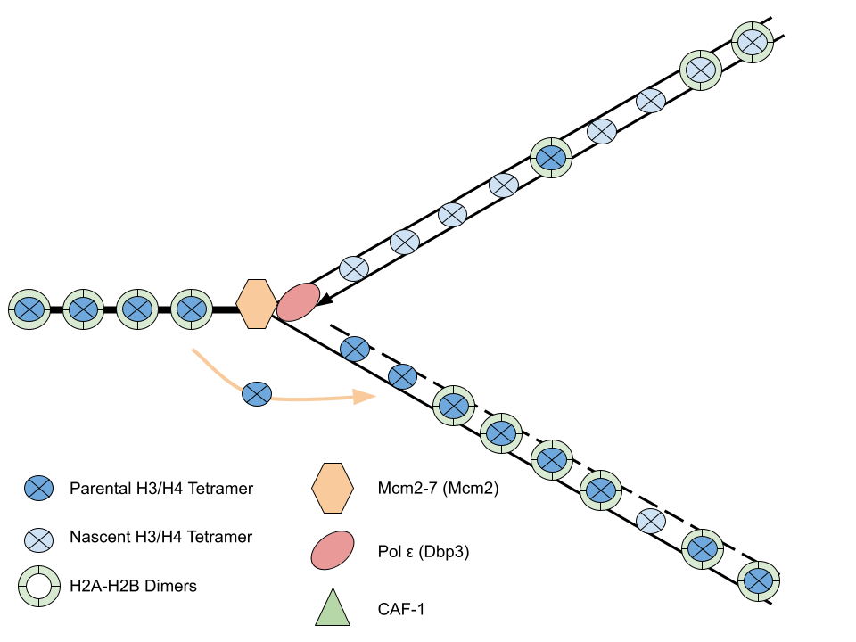
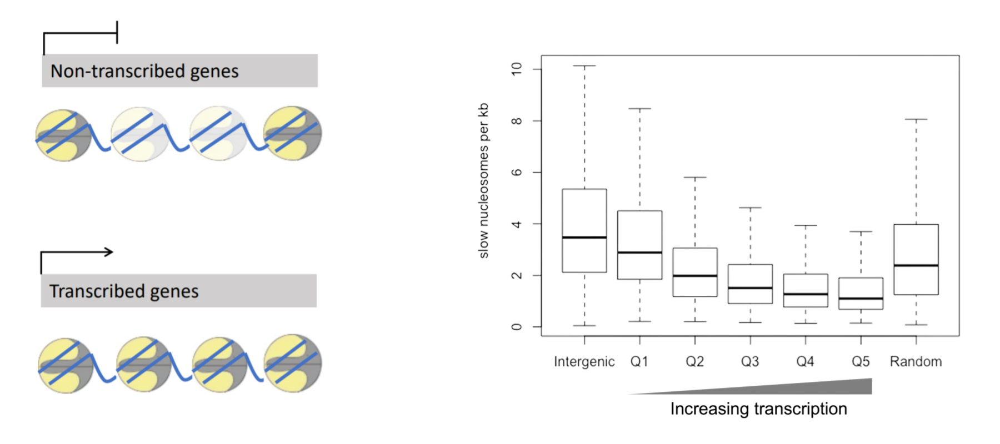
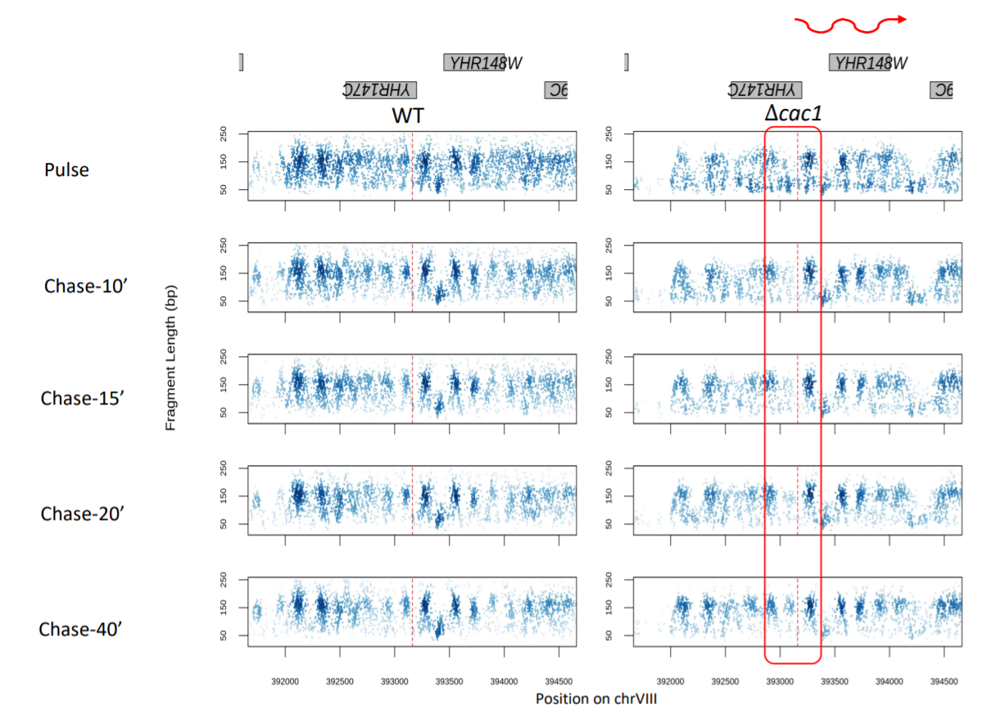
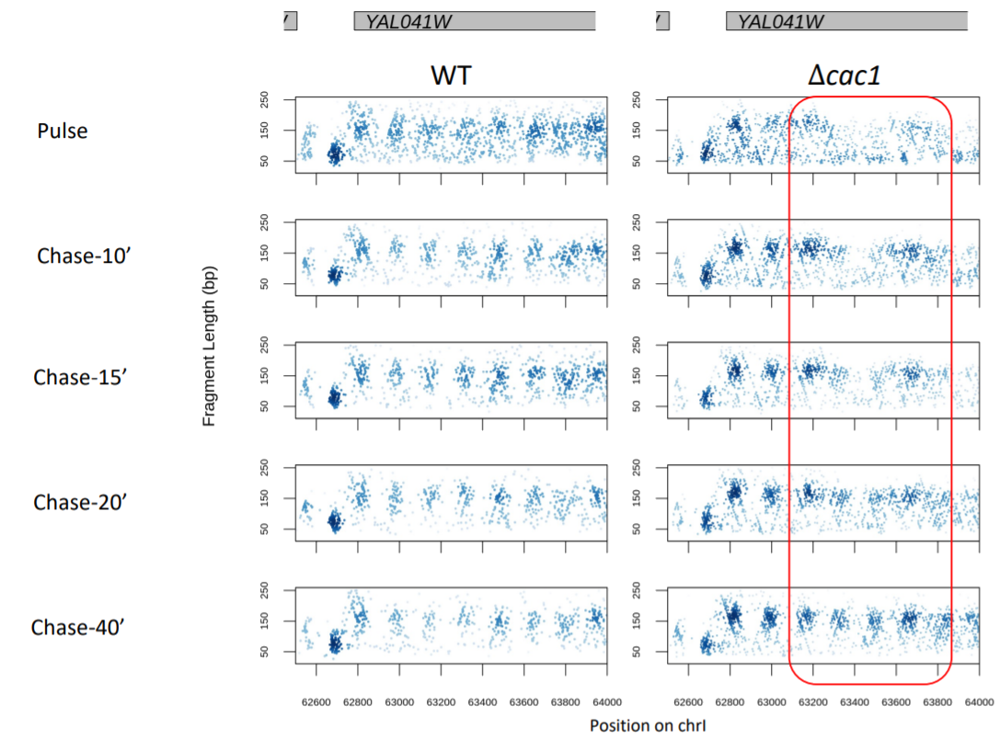

Strand-specific and differential kinetics of chromatin maturation at the replication fork in histone chaperone mutants
Department of Pharmacology and Cancer Biology
Duke University School of Medicine
UAB 2024
Bonnie's assembly

Boning Chen 陈泊宁
Nucleosome assembly at the replication fork
Hammond et al., NSMB 2017
Loss of CAF-1 (Δ cac1) phenotypes

Enomoto and Berman, 1997; Kaufman et al, 1996; Bakel et al, 2013
Gutierrez et al., Genome Res, 2019
Chen et al., Genome Research, 2023
Bakel et al, 2013
Bakel et al, 2013
Bakel et al, 2013
Verreault et al, 1996; Yang et al, 2015
Enomoto and Berman, 1997; Kaufman et al, 1996; van Bakel et al, 2013
Bakel et al, 2013
Enomoto and Berman, 1997; Kaufman et al, 1996; van Bakel et al, 2013
van Bakel et al, 2013
van Bakel et al, 2013
Chen et al., Genome Research, 2023
Kevin Moyung


Chromatin occupancy at nucleotide resolution

Nascent chromatin occupancy profiling

WT nucleosome assembly

Loss of CAF-1 delays assembly

Heterogenous nuleosome maturation in the absence of CAF-1
Deposition of nucleosomes
Loss of CAF-1 results in transient S-phase specific cryptic antisense transcription
Loss of CAF-1 results in transient S-phase specific loss of silencing
Summary of
 

WT Chromatin Assembly
WT Chromatin Assembly (pulse)
WT Chromatin Assembly (chase)


mcm2-3A Chromatin Assembly

mcm2-3A Chromatin Assembly (pulse)
mcm2-3A Chromatin Assembly (chase)



Acknowledgements
MacAlpine Lab
Collaborators
Bonnie Chen
Chris Counter (Duke)
Rachel Hoffman
Alex Hartemink (Duke)
Yulong Li
Trung Tran (Hartemink)
Kevin Moyung
Nhat Duong (Hartemink)
Heather MacAlpine
Funding
NIH/NIGMS
Nascent chromatin occupancy profiling

Nascent chromatin rapidly matures


Transcription replaces/resets slow nucleosomes

Cryptic transcription initiates at slow nucleosomes

Cryptic transcription initiates at slow nucleosomes

Summary of
WT nucleosome assembly
Nascent chromatin rapidly matures
CAF-1 deposits nascent histone H3-H4 tetramers

Loss of CAF-1 (
Loss of CAF-1 delays assembly
Loss of CAF-1 delays assembly
Loss of CAF-1 delays assembly
Heterogenous deposition of nucleosomes

Heterogenous deposition of nucleosomes

Transcription replaces/resets slow nucleosomes
Loss of CAF-1 (
Cryptic transcription initiates at slow nucleosomes
Cryptic transcription initiates at slow nucleosomes
Loss of CAF-1 results in transient S-phase specific cryptic antisense transcription
Loss of CAF-1 results in transient S-phase specific loss of silencing
Summary of
Kevin's network
Gene regulatory network
Chromatin regulatory network
Profiling chromatin occupancy in ~180 TF deletion mutants
Profiling chromatin occupancy in ~180 TF deletion mutants
Chromatin changes associated with expression

Chromatin signatures
Predicting gene expression from chromatin data
Building a chromatin regulatory network
Chromatin regulatory networks provide mechanistic insight
Chromatin regulatory networks provide mechanistic insight
Acknowledgements
MacAlpine Lab
Collaborators
Bonnie Chen
Chris Counter (Duke)
Rachel Hoffman
Alex Hartemink (Duke)
Yulong Li
Trung Tran (Hartemink)
Kevin Moyung
Nhat Duong (Hartemink)
Heather MacAlpine
Funding
NIH/NIGMS